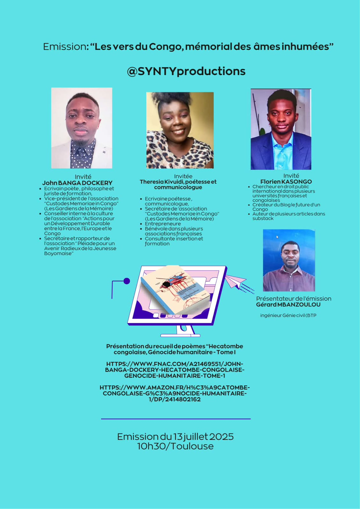
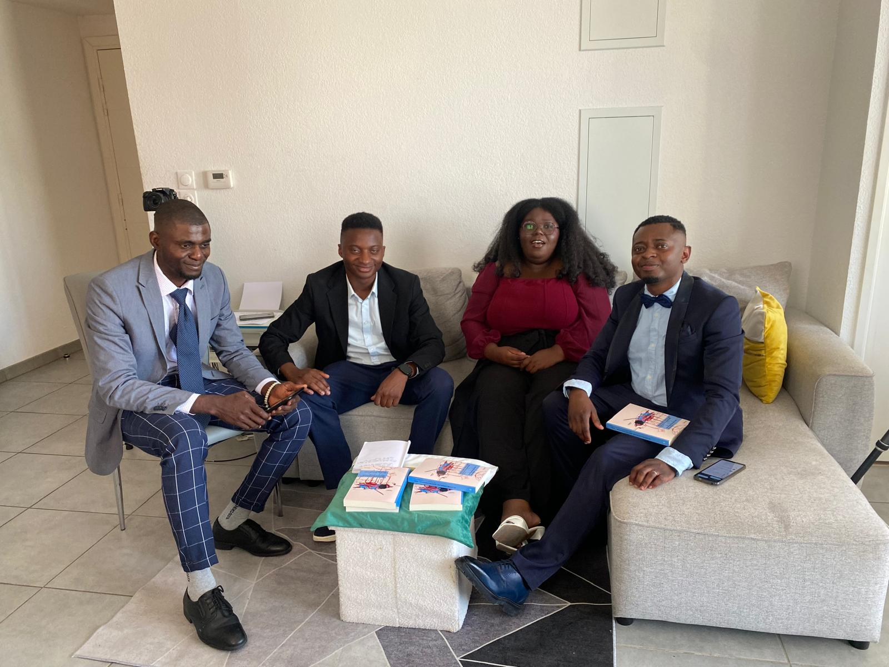

Raising awareness and sharing knowledge through writing
Writing is, for me, a natural extension of my commitment: documenting realities that are sometimes made invisible, sharing experiences and offering avenues for reflection on human, social and societal issues.

Différent(e), mais choisi(e)
Have you ever felt too sensitive, too intense, out of step with the world around you? This book explores the realities of high sensitivity, giftedness, and a deep need for meaning, through a perspective blending personal experience, Christian faith and the human sciences.
A path toward understanding and reconciling with oneself, where difference is no longer seen as a weakness, but as a singular way of inhabiting the world.
"Beauty is always in the eye of the beholder."
Foreword: Dr Fatou Makele. Available now on Amazon.
View on AmazonHécatombe congolaise, génocide humanitaire · Tome I
A collective work devoted to the human consequences of the conflicts in eastern Democratic Republic of Congo (resource plundering, massacres, forced displacement, sexual violence) and their international ramifications. It aims to document the realities experienced by civilian populations, contribute to the duty of remembrance, and raise awareness among decision-makers and the general public.
My contribution
I co-authored this collective work, alongside John Banga Dockery, Paulin Mutoro Likaso and several other contributors, to support the advocacy efforts of Memoriae Custodes in Congo, of which I am Secretary General.
A link to advocacy
This book extends the advocacy work carried out with Memoriae Custodes in Congo, through several awareness-raising launch events held in Brussels, Paris, Toulouse and Guadeloupe.
Éditions Edilivre · ISBN 9782414802166
View on Amazon
A day of sharing around Hécatombe congolaise
Presenting the book alongside John Banga Dockery and Florien Kasongo, with an interview for the programme "Les vers du Congo, mémorial des âmes inhumées" (@SYNTYproductions).


Programme "Les vers du Congo, mémorial des âmes inhumées", 13 July 2025, Toulouse.

Book launch at Le Mayombe restaurant in Toulouse.
More formats to come: articles, opinion pieces, podcasts, media appearances.